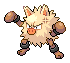
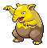
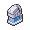
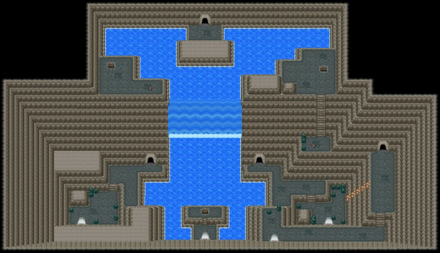
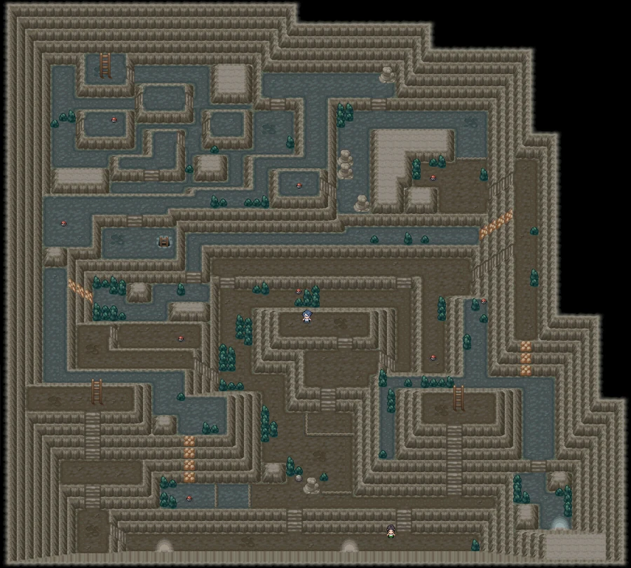
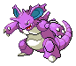
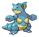
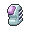

攻略大全 / 心金 / 魂银（详细图文） / 地图总览
湛蓝市、湛蓝道馆、浅葱道馆、42号道路、擂钵山
主线
湛蓝市

湛蓝市是城都本土西南方一块陆地上的海边小镇。虽然路途遥远，仍有不少训练家冒险穿过40号道路和41号道路的海面，来挑战湛蓝道馆，或者拜访一家以独特药品闻名、有几百年历史的药店。断崖关口往西通往47号道路和48号道路，但尽头的狩猎地带还在施工中。
| 宝可梦 | 版本 | 方式 | 等级 | 出现率 |
|---|---|---|---|---|
| 冲浪 | ||||
| 心金 / 魂银 | 冲浪 | Lv.10-25 | 90% | |
| 心金 / 魂银 | 冲浪 | Lv.15-25 | 10% | |
| 钓鱼 | ||||
| 心金 / 魂银 | 破旧钓竿 | Lv.10 | 85% | |
| 心金 / 魂银 | 破旧钓竿 | Lv.10 | 15% | |
| 心金 / 魂银 | 好钓竿 | Lv.20 | 50% | |
| 心金 / 魂银 | 好钓竿 | Lv.20 | 早 0% · 日 0% · 夜 10% | |
| 心金 / 魂银 | 好钓竿 | Lv.20 | 40% | |
| 心金 / 魂银 | 好钓竿 | Lv.20 | 早 10% · 日 10% · 夜 0% | |
| 碎岩 | ||||
| 心金 / 魂银 | 碎岩 | Lv.15-24 | 80% | |
| 壶壶 | 心金 / 魂银 | 碎岩 | Lv.23-28 | 20% |
| 赠送的宝可梦 | ||||
| 壶壶 | 心金 / 魂银 | 赠送 | Lv.20 | 1 只 |
| 队伍里只有一只宝可梦时 | ||||
| 心金 / 魂银 | 赠送 | Lv.15 | 不限次数 | |
| 道具 | 版本 | 位置 / 获得方法 |
|---|---|---|
| 心金 / 魂银 | 中间两个晾晒架之间（隐藏道具） | |
| 树果汁 | 心金 / 魂银 | Kirk 托你照顾的壶壶 Shuckie 携带 |
| 心金 / 魂银 | 湛蓝市药店，在浅葱灯塔和阿蜜谈过之后 | |
| 招式学习器01（真气拳） | 心金 / 魂银 | 打败道馆馆主阿四后由他给予 |
| 秘传学习器02（飞翔） | 心金 / 魂银 | 湛蓝道馆门前，打败她丈夫后由阿四的妻子给予 |
| 心金 / 魂银 | 最北边那栋房子旁边（隐藏道具，需要碎岩） |
湛蓝市药店
湛蓝市药店在镇子南边，500 年来一直充当本地的友好商店。把浅葱灯塔的情况告诉店主，会得到秘药，这是一种只在紧急时才配发的强效药。
配发完秘药后，店主会出售传统药品。
| 商品 | 价格 |
|---|---|
| ₽300 | |
| ₽700 | |
| ₽1200 | |
| ₽600 | |
| ₽1500 |
只剩一只
镇子西南边的房子住着一个宝可梦狂。和他说话会得知，有个「眼神锐利、留着长发」的人欺负他，逼他交出了一只宝可梦。他还剩一只，但很怕那个小偷再回来。他拜托你替他保管剩下的那只宝可梦：壶壶。
之后他会来要回壶壶，但如果它已经和你足够亲近，他会决定让你留着它。
湛蓝道馆

| 湛蓝市宝可梦道馆 馆主：阿四 用咆哮的铁拳说话 |
湛蓝道馆专精格斗属性宝可梦。格斗属性招式对恶、冰、一般、岩石、钢属性效果绝佳，而格斗属性宝可梦怕飞行和超能力属性招式。
道馆被设计成一片悬崖，馆主在人造瀑布下冥想。先爬上西侧，和空手王 Yoshi、空手王 Nob 对战。Nob 走向你时会挡住从这边上最高层的楼梯。去东侧和空手王 Lao 对战，然后过桥到西侧最高层的红色按钮那里。按下按钮会转动绞盘、升起水管，瀑布就会停下来。
阿四的火暴猴攻击很高，本身就能造成不小的伤害。瞪眼会降低对手的防御，岩崩则能反击飞行属性宝可梦。他的蚊香泳士会用催眠术让对手睡着，泰山压顶可能造成麻痹；它是水属性，也怕草和电属性招式。两只宝可梦都会真气拳：这是最强的格斗属性招式，使用者要先花一回合蓄力，蓄力时被打中就会失败。解眠药、零余果之类的回复道具会很有用，用反射壁提高宝可梦的防御也很有效。
| 训练家 | 宝可梦 | 奖金 |
|---|---|---|
| 空手王 Yoshi | ₽648 | |
| 空手王 Nob | 腕力 Lv.25 | ₽600 |
| 空手王 Lao | ₽648 | |
| 空手王 Lung |  火暴猴 Lv.25 | ₽600 |
| 宝可梦 | 详情 |
|---|---|
| 火暴猴 Lv.29 · 格斗 | 特性：干劲 招式：岩崩、影子分身、真气拳、瞪眼 |
Lv.31 · 水 / 格斗 | 特性：储水 携带： 招式：冲浪、催眠术、泰山压顶、真气拳 |
对战结束后，阿四会授予你风暴徽章：70 级以下的宝可梦都会听你的话，并且能在野外使用飞翔。他还会送你招式学习器01（真气拳）。
像鸟一样飞
走出道馆，阿四的妻子一眼就注意到你的新风暴徽章，送你秘传学习器02（飞翔）。这个野外招式能让训练家快速回到去过的地方。她说丈夫输了是好事，这样他就有理由继续修行了。
Cameron 的家
东北边的房子是摄影师 Cameron 的家。他不在，但他的亲戚邀请你用屋外架好的相机，和队伍里的宝可梦合影。
追逐北风
沙滩最北端的悬崖脚下有一座小山丘。你在这里第一次见到从烧焦塔跑掉后的传说宝可梦水君。你走得太近时，它会绕着你跑一圈，然后踏着海浪跑走。片刻之后米纳奇出现了，为了向传说的宝可梦证明自己，他向你发起挑战。
对战米纳奇
米纳奇的宝可梦属性多样，但弱点还是有重叠。他的催眠貘会先用催眠术让对手睡着，再用食梦吸取体力。鬼斯通的黑色目光能防止逃走，诅咒则牺牲自己的体力来折磨对手。这两只都怕幽灵和恶属性攻击。他的顽皮雷弹是电属性，只怕地面属性招式。
| 宝可梦 | 详情 |
|---|---|
 催眠貘Lv.25 · 超能力 | 特性：不眠 招式：催眠术、定身法、念力、食梦 |
Lv.25 · 幽灵 / 毒 | 特性：飘浮 招式：催眠术、舌舔、黑色目光、诅咒 |
Lv.27 · 电 | 特性：静电 招式：音爆、滚动、刺耳声、打雷 |
对战结束后，米纳奇保证会继续寻找水君，然后和你道别，下次再见。
↓ 下一站：浅葱市
浅葱市
浅葱灯塔
6F
回到浅葱灯塔，坐电梯到顶层把秘药交给阿蜜。她给 Amphy 喂了药，它恢复了活力，光芒也回来了。看到它完全康复，阿蜜保证会回到浅葱道馆。
盛大开业！
走出灯塔时，你会接到园长 Baoba 的电话。他告诉你狩猎地带终于开张了，从湛蓝市的断崖关口过去就能到。
浅葱道馆

| 浅葱市宝可梦道馆 馆主：阿蜜 钢铁般坚固的防守女孩 |
浅葱道馆专精钢属性宝可梦。钢属性招式对冰和岩石属性效果绝佳，而钢属性宝可梦怕格斗、火、地面属性招式。
道馆里既没有谜题，也没有道馆训练家，挑战者可以直接走到馆主面前。
阿蜜的两只小磁怪都会用超音波和电磁波骚扰对手，不过地面属性宝可梦免疫电磁波。她的大钢蛇也怕火属性攻击，但会用落石反击大意的火属性宝可梦。刺耳声会降低对手的防御，铁尾也可能有同样效果。它的特防很低，特别怕特殊的火属性和水属性攻击。
| 宝可梦 | 详情 |
|---|---|
| 小磁怪 Lv.30 · 电 / 钢 | 特性：磁力 招式：十万伏特、音爆、超音波、电磁波 |
| 小磁怪 Lv.30 · 电 / 钢 | 特性：磁力 招式：十万伏特、音爆、超音波、电磁波 |
Lv.35 · 钢 / 地面 | 特性：结实 携带： 招式：铁尾、落石、沙暴、刺耳声 |
对战结束后，阿蜜会授予你矿物徽章。她还会送你招式学习器23（铁尾）。
城都西部已经探索完了，下一个目的地是地区东北部的山区。飞回圆朱市，往东前往42号道路。
↓ 下一站：42号道路
42号道路

42号道路连接圆朱市和东边的卡吉镇。道路沿着擂钵山山脚延伸，被两个小湖隔成了三段。直接渡湖需要冲浪，不过也可以穿过山里绕开。道路中间有一片球果树林。
| 训练家 | 宝可梦 | 奖金 |
|---|---|---|
| 钓鱼人 Tully | ₽608 | |
| 宝可梦狂 Shane | ₽1088 | |
| 登山男 Benjamin | ₽544 |
| 宝可梦 | 版本 | 方式 | 等级 | 出现率 |
|---|---|---|---|---|
| 心金 | 草丛 | Lv.14, 16 | 早 30% · 日 30% · 夜 0% | |
| 魂银 | 草丛 | Lv.14, 16 | 早 40% · 日 40% · 夜 0% | |
| 心金 | 草丛 | Lv.14, 16 | 早 0% · 日 0% · 夜 30% | |
| 魂银 | 草丛 | Lv.14, 16 | 早 0% · 日 0% · 夜 40% | |
| 心金 | 草丛 | Lv.15 | 30% | |
| 心金 | 草丛 | Lv.13 | 30% | |
| 魂银 | 草丛 | Lv.13, 15 | 50% | |
| 心金 / 魂银 | 草丛 | Lv.15, 17 | 10% | |
| 冲浪 | ||||
| 心金 / 魂银 | 冲浪 | Lv.10-25 | 90% | |
| 心金 / 魂银 | 冲浪 | Lv.15-25 | 10% | |
| 钓鱼 | ||||
| 心金 / 魂银 | 破旧钓竿 | Lv.10 | 85% | |
| 心金 / 魂银 | 破旧钓竿 | Lv.10 | 15% | |
| 心金 / 魂银 | 好钓竿 | Lv.20 | 60% | |
| 心金 / 魂银 | 好钓竿 | Lv.20 | 40% | |
| 头锤（A 组树） | ||||
| 心金 / 魂银 | 头锤 | Lv.13-14 | 50% | |
| 心金 / 魂银 | 头锤 | Lv.13-14 | 30% | |
| 心金 / 魂银 | 头锤 | Lv.13-14 | 20% | |
| 头锤（B 组树） | ||||
| 心金 / 魂银 | 头锤 | Lv.15-16 | 80% | |
| 心金 / 魂银 | 头锤 | Lv.15-16 | 20% | |
| 道具 | 版本 | 位置 / 获得方法 |
|---|---|---|
| 招式学习器65（暗影爪） | 心金 / 魂银 | 擂钵山西边入口的告示牌附近 |
| 秘传学习器04（怪力） | 心金 / 魂银 | 从擂钵山西边入口跑出来的登山男给予 |
| 心金 / 魂银 | 擂钵山中间入口南边，西边那棵树上（每天一次，需要冲浪、居合斩） | |
| 心金 / 魂银 | 擂钵山中间入口南边，中间那棵树上（每天一次，需要冲浪、居合斩） | |
| 心金 / 魂银 | 擂钵山中间入口南边，东边那棵树上（每天一次，需要冲浪、居合斩） | |
| 心金 / 魂银 | 球果树林东北边的水边（需要冲浪） | |
 全满药 | 心金 / 魂银 | 东边湖的东南边，一块孤零零的岩石上（隐藏道具，需要冲浪） |
| 之后再来 | ||
| 心金 / 魂银 | 东边湖的北边，从擂钵山过去（需要攀岩） | |
急躁的登山男
你刚走近擂钵山西边入口时，一个登山男从洞里冲出来。他撞到你后连声道歉，并送你秘传学习器04（怪力）作为补偿。这个野外招式能让会这招的宝可梦轻松推动大石头。
追逐北风
两个湖之间有一片球果树林，被一棵可以用居合斩砍掉的小树挡着。走进树林，会再次看到站在树间的水君。你走得太近时它又会跑掉，往东冲向卡吉镇。片刻之后米纳奇赶到，说水君出现时你好像总在附近。不过他并不担心，因为他相信自己寻找它的决心比你强。他再次表示一定要弄清水君在寻找什么，然后赶紧追了过去。
擂钵山


擂钵山是深入北部山区的一个大洞窟。进不进都可以，但里面有很多值钱的道具和宝可梦。要在复杂的地形中行动，需要冲浪、怪力和攀瀑，所以第一次来没法到达所有区域。
| 训练家 | 宝可梦 | 奖金 |
|---|---|---|
| 宝可梦狂 Harrison |  尼多王 Lv.17 尼多后 Lv.17 | ₽1088 |
| 宝可梦 | 版本 | 方式 | 等级 | 出现率 |
|---|---|---|---|---|
| 心金 / 魂银 | 洞窟 | Lv.13, 15 | 60% | |
| 腕力 | 心金 / 魂银 | 洞窟 | Lv.14 | 20% |
| 心金 / 魂银 | 洞窟 | Lv.14, 16 | 14% | |
| 心金 / 魂银 | 洞窟 | Lv.14 | 5% | |
| 心金 / 魂银 | 洞窟 | Lv.15 | 1% | |
| 冲浪 | ||||
| 心金 / 魂银 | 冲浪 | Lv.10-25 | 90% | |
| 心金 / 魂银 | 冲浪 | Lv.15-25 | 10% | |
| 钓鱼 | ||||
| 心金 / 魂银 | 破旧钓竿 | Lv.10 | 85% | |
| 心金 / 魂银 | 破旧钓竿 | Lv.10 | 15% | |
| 心金 / 魂银 | 好钓竿 | Lv.20 | 60% | |
| 心金 / 魂银 | 好钓竿 | Lv.20 | 40% | |
| 心金 / 魂银 | 洞窟 | Lv.13, 15 | 50% | |
| 腕力 | 心金 / 魂银 | 洞窟 | Lv.13, 15 | 35% |
| 心金 / 魂银 | 洞窟 | Lv.14 | 10% | |
| 心金 / 魂银 | 洞窟 | Lv.14 | 5% | |
| 道具 | 版本 | 位置 / 获得方法 |
|---|---|---|
| 入口 | ||
| 心金 / 魂银 | 西边入口东北边，一块孤零零的岩石上（隐藏道具） | |
 ＰＰ单项小补剂 | 心金 / 魂银 | 瀑布西边，从下层洞窟过去 |
| 心金 / 魂银 | 瀑布东边，从下层洞窟过去 | |
| 下层洞窟 | ||
| 心金 / 魂银 | 大石头东北边颜色较深的泥土里（隐藏道具，需要怪力） | |
| 心金 / 魂银 | 中西部区域（需要怪力） | |
| 全满药 | 心金 / 魂银 | 中央区域，五根一组的石笋旁边（需要怪力） |
| 心金 / 魂银 | 中东部区域，理科男 Markus 东南边（需要怪力） | |
| 心金 / 魂银 | 东北区域（需要怪力） | |
下层（从西边入口到东边入口）
入口（西南）
从西边的洞口往北走，穿过开口到达下层洞窟。
下层洞窟
爬上西北边的梯子，会来到入口的上层，也就是瀑布上方的西侧平台。拿ＰＰ单项小补剂，然后爬回梯子下面。
往东走，用怪力推开大石头，打通往北的路。先绕上左边第一道楼梯拿高级球，然后继续往北。拿东北边的全满药，然后转向东边。最近的楼梯通往理科男 Markus，那里有一条回入口的捷径。先继续往东拿东南边的离洞绳，再爬上大楼梯拿北边的金珠。回到南墙边的大石头那里，往东爬楼梯，走到第二个梯子。
它通往入口的上层，也就是瀑布上方的东侧平台。拿活力碎片，然后爬回梯子下面。
往南走回到入口。
入口（东南）
往东南走到东边的洞口，回到42号道路。
原文：Bulbapedia《Walkthrough:Pokémon HeartGold and SoulSilver/Part 10》（修订版本 4544788，），作者见原文页面历史。本页由 Eli 的杂货间翻译为中文，并有改动（重新排版、精简部分图注）。原文与译文均以 CC BY-NC-SA 2.5 授权。配图来自原站，版权归原作者与游戏厂商；地图截图来自 Bulbagarden Archives，游戏画面版权归 Nintendo / Game Freak / The Pokémon Company。